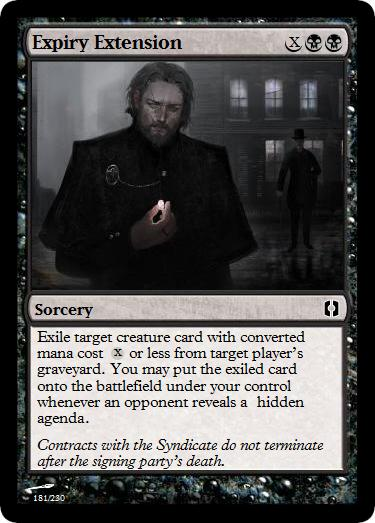

My name is Patrick. For good or ill, I'm a game developer/designer and writer living in southern California. Contained herein are samples of my work in both fields.
If you have questions about the contents of this site or wish to contact me for any other reason, please send me an email and I will generally reply within 24 hours.
NEMESIS is a proof-of-concept game I made in Unity3D along with my co-conspirator Gabriel Gonzalvez as part of our computer science studies at Loyola Marymount University. I proposed the project as an independent studies course and received a grant from the university for a Unity Pro license, and we tracked our progress on a weekly devblog. Players assume the role of the titular nemesis, an archvillain protecting their lair from encroaching adventurers. As such, inspiration for the project came in equal parts from the roguelike genre, the PC title Dungeon Defenders, and "tower defense" games.
The alpha build was formally presented after a semester's work to computer science department faculty and students, as well as livestreamed to industry professionals and university alumni.
CONTRIVANCE is my current passion project, a homebrewed expansion for the trading card game Magic: the Gathering, inspired by and designed to echo Limited draft play of the game's existing Conspiracy expansion. Support for multiplayer games in the Limited format is largely nonexistent outside of Conspiracy and cube drafting, a lack that provided the impetus for Contrivance. Multiplayer Magic is something I greatly enjoy and feel has more potential design space than Conspiracy explored.
The final set will contain 230 cards -- a "large expansion" by Wizards of the Coast's official size classifications for published sets -- with 15 lands, 80 commons, 60 uncommons, 40 rares, 15 mythic rares, and 20 "conspiracy" cards. A selection of sample cards of varying rarities can be found below.

I also have multiple mods for The Elder Scrolls V: Skyrim to my name. Ghosts of Akavir adds a new follower NPC, quest, dragon boss encounter, and spell to the game, and Undead Dragon: Vedstrunah -- its standalone counterpart that only adds the dragon boss encounter -- has thousands of downloads between the Skyrim Nexus and Steam Workshop mod hosting services.
Screenshots from these mods and others can be found below.
TRIP is a cyberpunk short story written for and published in the 2015 edition of the literary magazine LA Miscellany, exploring the implications of easily accessible virtual reality.
THE BANNER is a poetic ballad I wrote in 2014, picked up for publication in the 2015 edition of Attic Salt, Loyola Marymount University's student-curated interdisciplinary journal. Previous editions also featured my submissions.
Please also enjoy a sample chapter of KINGMAKER, an original fantasy novel and my National Novel Writing Month 2015 project.